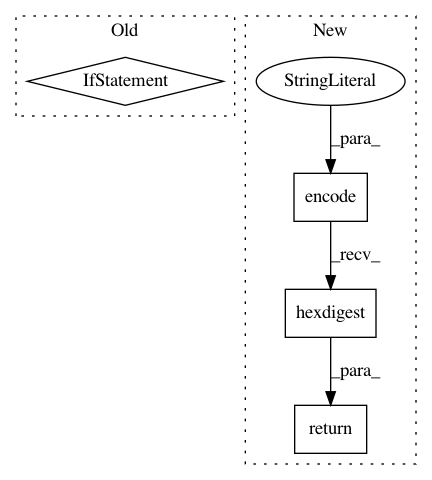

64d95768f8192b11b8d390c198a2eee95ec82373,imagekit/files.py,ImageSpecCacheFile,name,#ImageSpecCacheFile#,94
Before Change
def name(self):
source_filename = self.source_file.name
filename = None
if source_filename:
hash = self.get_hash()
ext = suggest_extension(source_filename, self.spec.format)
filename = os.path.normpath(os.path.join(
settings.IMAGEKIT_CACHE_DIR,
os.path.splitext(source_filename)[0],
"%s%s" % (hash, ext)))
return filename
def clear(self):
return self.spec.image_cache_backend.clear(self)
After Change
@property
def name(self):
source_filename = self.kwargs["source_file"].name
hash = md5("".join([
source_filename,
self.generator.get_hash(),
]).encode("utf-8")).hexdigest()
// TODO: Since specs can now be dynamically generated using hints, can we move this into the spec constructor? i.e. set self.format if not defined. This would get us closer to making ImageSpecCacheFile == GeneratedImageCacheFile
ext = suggest_extension(source_filename, self.generator.format)
return os.path.normpath(os.path.join(
settings.IMAGEKIT_CACHE_DIR,
os.path.splitext(source_filename)[0],
"%s%s" % (hash, ext)))
class IKContentFile(ContentFile):
In pattern: SUPERPATTERN
Frequency: 3
Non-data size: 4
Instances
Project Name: matthewwithanm/django-imagekit
Commit Name: 64d95768f8192b11b8d390c198a2eee95ec82373
Time: 2012-11-01
Author: m@tthewwithanm.com
File Name: imagekit/files.py
Class Name: ImageSpecCacheFile
Method Name: name
Project Name: erikbern/ann-benchmarks
Commit Name: c6418175813007be62406bfb35b42441202b017a
Time: 2018-03-03
Author: maau@itu.dk
File Name: create_website.py
Class Name:
Method Name: create_plot
Project Name: home-assistant/home-assistant
Commit Name: 3fae4fefbfa82e600bfec208af1000f34b0b357b
Time: 2016-08-20
Author: paulus@paulusschoutsen.nl
File Name: homeassistant/components/media_player/__init__.py
Class Name: MediaPlayerDevice
Method Name: entity_picture